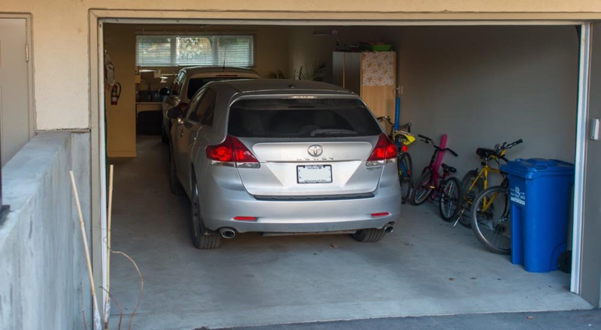
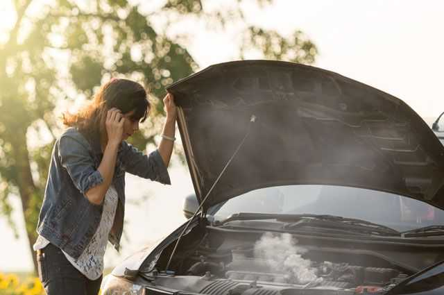
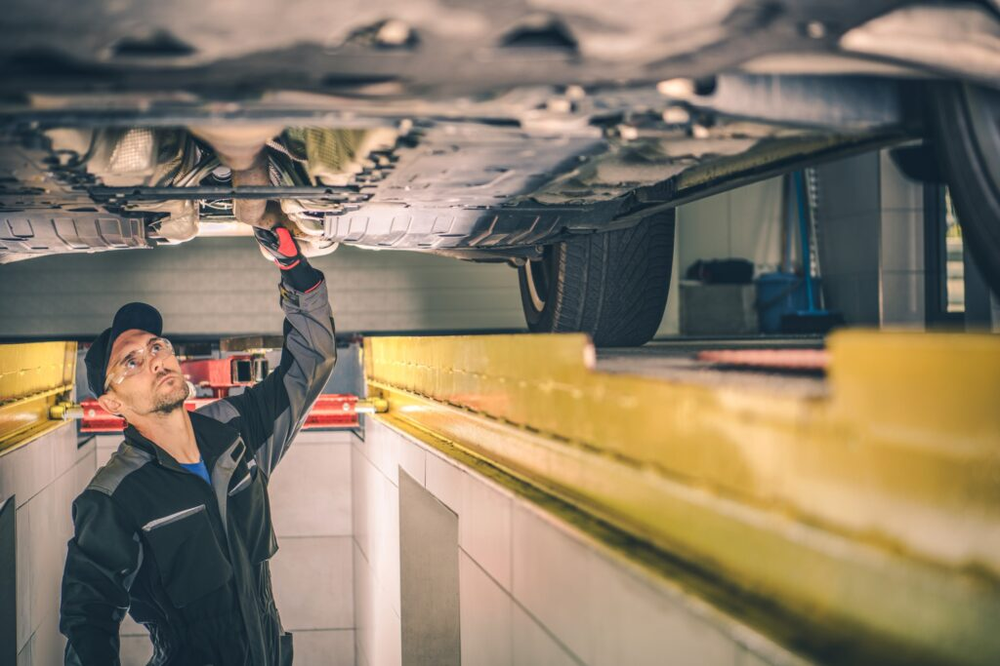
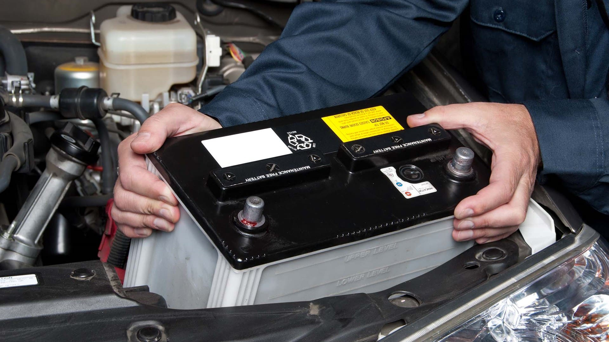

Детальні інструкції щодо щоденної перевірки основних систем вашого автомобіля: гальм, світлотехніки, рівня рідин та тиску в шинах.
Поради щодо правильного зберігання автомобіля: як уникнути корозії, зберегти акумулятор та забезпечити належні умови зберігання в різні пори року.
Рекомендації з підготовки автомобіля до зимових умов: заміна шин, перевірка системи опалення та обігріву, використання зимових рідин для склоомивача.
Поради щодо підготовки автомобіля до літніх поїздок: перевірка системи кондиціонування, заміна масла, огляд шин та охолоджувальної системи.
Ефективні методи мийки та чистки автомобіля: які засоби використовувати, як уникнути подряпин, як правильно мити двигун та інтер'єр.
Як захистити автомобіль від корозії: антикорозійна обробка, правильний догляд за лакофарбовим покриттям та регулярні огляди кузова.
Покрокові інструкції з заміни лампочок у фарах та індикаторах: необхідні інструменти, процес заміни та поради щодо вибору правильних лампочок.
Як правильно вибрати та замінити акумулятор: ознаки зношення акумулятора, необхідні інструменти та заходи безпеки.
Кроки, які потрібно вжити у разі аварії: як викликати допомогу, зібрати необхідні документи та надати першу медичну допомогу.
Основні правила безпечного водіння: дотримання дистанції, швидкісного режиму, використання ременів безпеки та інших систем захисту.